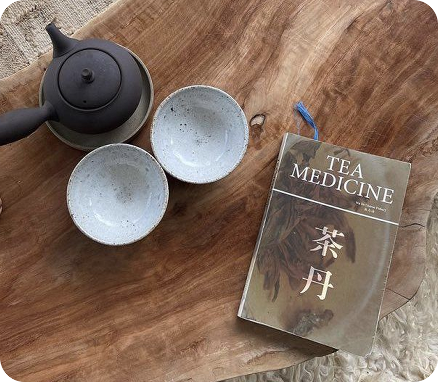
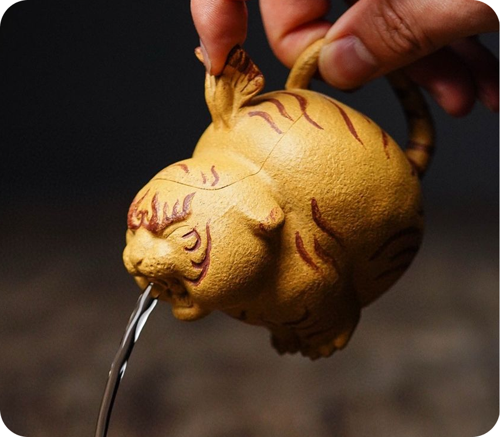
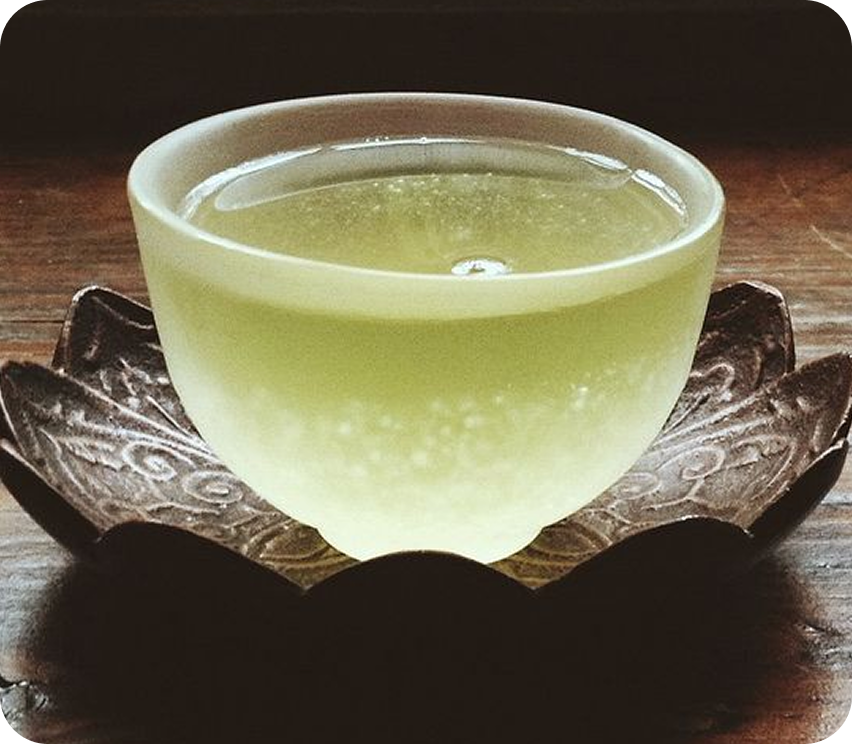
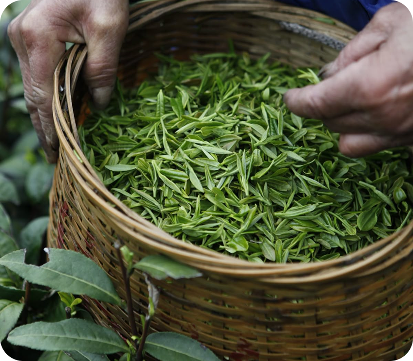

Какой температурой воды нужно заваривать Лю Бао, чтобы он не горчил и ароматно раскрылся?

С чего начать изучение традиционного китайского чаепития и что купить для домашнего опыта?

Почему не получается приготовить молочный улун Най Сян, что делаю не так?

Не получается найти подходящий чайный сервиз для приготовления Белого китайского чая...

Слышала, что Сиху Лунцзинь очень вредит здоровью беременных, правда ли это?

В чём приготовить чай, чтобы удивить гостей? Не могу определиться с китайским сервизом…

Какой купить сорт чая, чтобы он расслаблял меня после тяжёлого дня и поднимал иммунитет?

Какой чай заварить после работы, чтобы переключиться на домашний вайб?



Задайте его лично нашим экспертам в телеграм канале и ВК паблике!